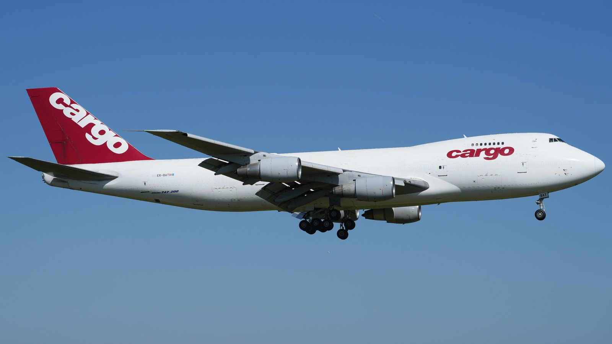
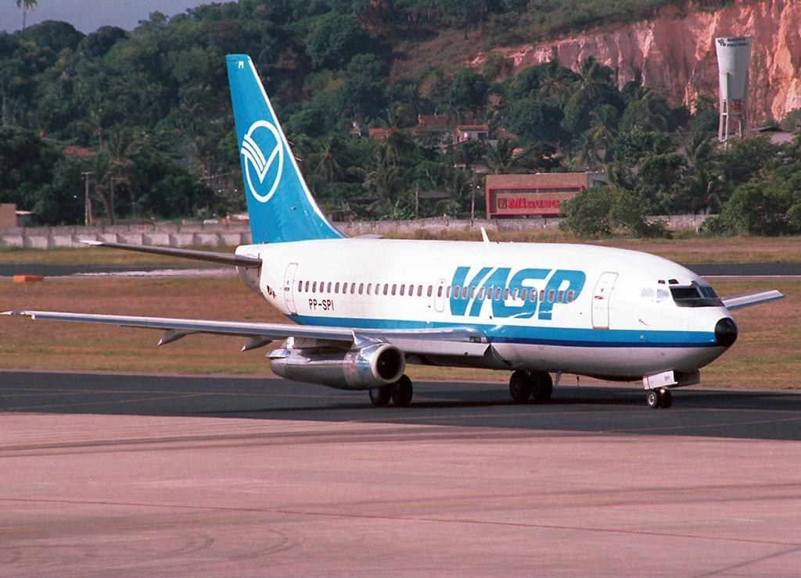

Cabeceira 36: o espetáculo da aviação que faz a alegria dos spotters no Recife
Quando o vento muda, o cenário também muda. E, para os apaixonados pela aviação, a movimentação da cabeceira 36 é um dos momentos mais aguardados do ano no Aeroporto Internacional do Recife – Guararapes.

Existe uma época do ano em que os olhares dos apaixonados pela aviação se voltam ainda mais para o céu do Recife. É quando as condições dos ventos favorecem a utilização da cabeceira 36, proporcionando um espetáculo à parte para quem gosta de observar, fotografar e registrar aeronaves.
A mudança de cabeceira acontece de acordo com as condições meteorológicas, especialmente a direção e a intensidade dos ventos, respeitando os critérios operacionais e de segurança da aviação. E quando a operação passa a favorecer a cabeceira 36, a expectativa entre os spotters aumenta. É hora de preparar as câmeras, ajustar as lentes e acompanhar de perto cada aproximação.
Um cenário de tirar o fôlego na Imbiribeira
Um dos grandes atrativos dessa movimentação está na Avenida Marechal Mascarenhas de Morais, na região da Imbiribeira, próximo à divisa com Jaboatão dos Guararapes.
O local proporciona um ângulo impressionante para acompanhar as aeronaves em aproximação. Dependendo do tipo de aeronave e da trajetória, a sensação é de que os aviões passam muito próximos dos postes e da estrutura urbana da avenida, criando imagens impressionantes e registros que fazem a alegria de qualquer apaixonado por aviação.
É uma experiência que mistura a grandiosidade das aeronaves com o cenário urbano da capital pernambucana. Para os fotógrafos e videomakers aeronáuticos, cada passagem pode render uma imagem especial.
A emoção dos spotters
Quando a cabeceira 36 entra em operação, os grupos de spotters ficam em clima de festa. A expectativa é grande, principalmente pela oportunidade de registrar aeronaves de diferentes companhias aéreas, modelos e tamanhos em um ângulo que não está disponível durante todo o ano.

Cada aproximação traz uma nova oportunidade: desde os aviões comerciais mais conhecidos até aeronaves maiores e operações especiais. É aquele momento em que o barulho dos motores, o movimento das aeronaves e os cliques das câmeras se misturam em uma verdadeira celebração da aviação.
Atenção à segurança!
Apesar da vista espetacular, é importante lembrar que a região exige atenção redobrada. A Avenida Marechal Mascarenhas de Morais é uma das principais artérias de circulação do Recife, com intenso fluxo de veículos durante praticamente todo o dia.
Por isso, quem deseja acompanhar ou fotografar as aeronaves deve priorizar locais seguros, respeitar as normas de trânsito, evitar permanecer próximo às pistas de circulação e nunca utilizar o acostamento ou a via de rolamento como ponto de observação.
A paixão pela aviação deve caminhar sempre junto com a responsabilidade.
Um espetáculo que só quem ama aviação entende!
A movimentação da cabeceira 36 é muito mais do que uma mudança operacional. Para a comunidade aeronáutica e os spotters pernambucanos, representa uma oportunidade especial de contemplar a aviação de um ângulo privilegiado.
E você, já teve a oportunidade de acompanhar uma aproximação pela cabeceira 36 no Aeroporto do Recife?